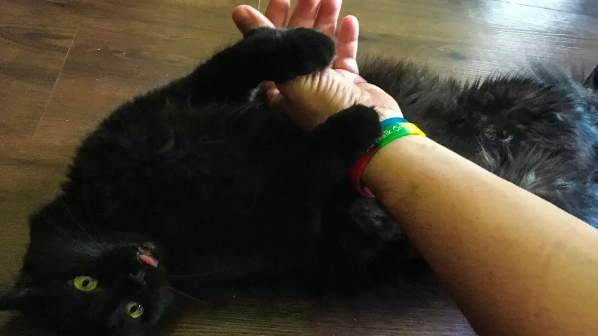

¿Los gatos negros dan mala suerte?
Aunque atribuir la mala suerte a cruzarse con un gato negro es solo fruto de la superstición, un estudio de científicos del Long Island College Hospital de Nueva York reveló hace poco que estos felinos sí pueden afectar negativamente a las personas alérgicas.
Según un estudio dado a conocer en la revista Annals of Allergy, Asthma and Inmunology, los investigadores observaron que los gatos de pelaje oscuro
provocaban más estornudos y problemas respiratorios a los pacientes con alergia que los de color claro. Según los autores, se debe a que producen
más cantidad de una sustancia en su piel, su saliva y sus glándulas sebáceas, la proteína fel d1, que causa los síntomas de la alergia.
Los gatos negros no siempre fueron el blanco de supersticiones, ni considerados como de mala suerte. De hecho, en el Egipto de hace 3000 años, los gatos
(incluidos los de color negro) fueron uno de los animales favoritos, tenidos en gran estima, y matar uno de ellos era considerado un crimen capital.
No fue sino hasta la Edad Media, en Europa, que el status del gato negro cambió, pues comenzó a ser asociado con las brujas y la hechicería. La histeria
colectiva contra las brujas y la práctica de magia negra se esparcía por Europa. De hecho, muchas ancianas solitarias que cuidaban y alimentaban gatos callejeros,
a menudo fueron acusadas de brujería.
El resquemor hacia los gatos negros tomó estado folclórico cuando un padre e hijo en 1560, en Lincolnshire, caminaban durante una noche sin luna, y un gato negro se
cruzó en su camino para luego esconderse en un rincón de un muro. Ellos arrojaron piedras al felino hasta que la criatura, indefensa y herida, corrió a refugiarse en
la casa de una mujer, quien en ese momento era sospechada de ser una bruja.
Comentarios:

Jazmín Albornoz
Este es un comentario de ejemplo. Su finalidad es mostrar cómo debería verse el nuevo comentario.
Agregar comentarios